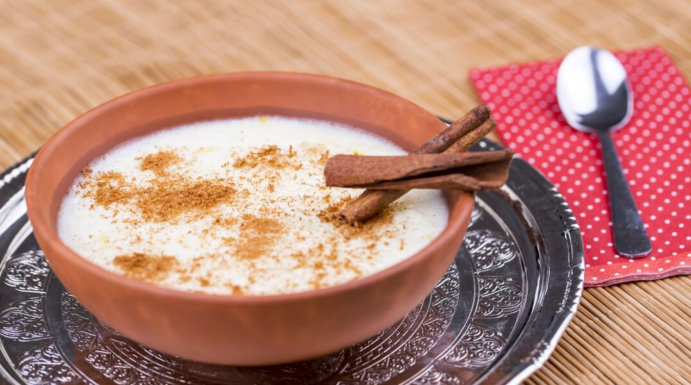

Rizogalo

Description
It seems most every culture has their version of rice pudding, from Middle Eastern-style rice pudding
that’s sometimes flavored with rose water,to Indian kheer scented with cardamom and saffron, to Sicilian
Strawberry Pudding, to French riz au lait that’s often finished with heavy whipping cream.
Rizogalo is Greece’s version of the classic dessert recipe. Like many Greek dishes, it uses humble
ingredients to make something truly exceptional.With no cream, eggs, butter, or condensed milk,
rizogalo is a healthy and delicious gluten-free rice pudding you’ll want to eat all year long!
Ingredients
- Milk
- Rice
- Vanilla
- Lemon and orange
- Cornstarch
- Sugar
- Cinnamon
Steps
- Season the milk. In a medium saucepan, add 4 1/4 cups milk, 1/2 cup Arborio rice, 1 cinnamon
stick, a 2-inch strip of lemon rind, and the zest
from 1/4 orange. Use a small knife to split the
vanilla pod in half lengthwise, then scrape the seeds into the pan and discard the pod
(wait until
later if you’re using vanilla extract).
- Bring to a simmer. Bring the mixture to a simmer over low to medium heat, whisking continuously
for the first 3 minutes so that the milk
and rice do not stick to the bottom of the pot.
- Cook rice. Continue to cook rice, whisking vigorously every six or so minutes and until the rice is
very tender and the mixture has started to thicken.
This should take about 35-40 minutes. To check
if the rice is cooked, taste a rice grain. It should be very soft. The consistency of the milk should
be thick like heavy cream.
- Thicken. Dilute 1 tablespoon of cornstarch with 1/4 cup of water in a small bowl. Pour into the rice
mixture over low heat, whisking until combined
and the pudding has thickened yet is slightly pourable
in consistency. This will happen quickly, so keep an eye on it. Remove from heat. It will
continue to
thicken slightly while it cools, so do not make it too thick.
- Finish. Remove and discard the lemon rind and cinnamon stick. Stir in 1 teaspoon vanilla extract and
sweeten to taste (I like about 2 tablespoons of sugar to start).
- Serve. Pour the pudding into 5 serving bowls and liberally sprinkle with cinnamon powder.